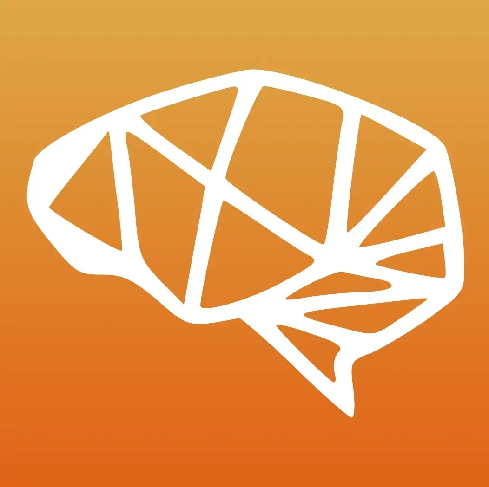
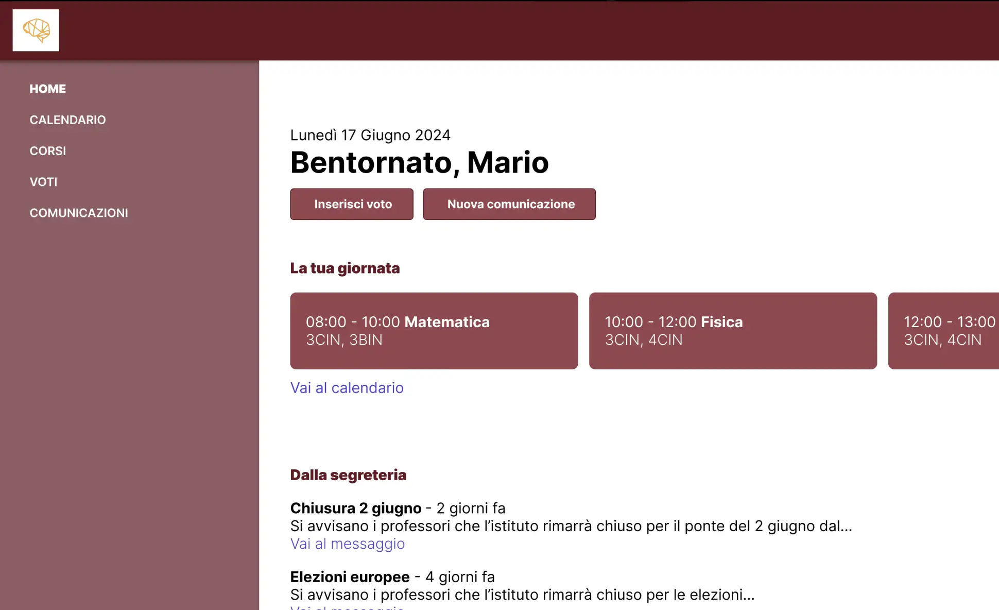
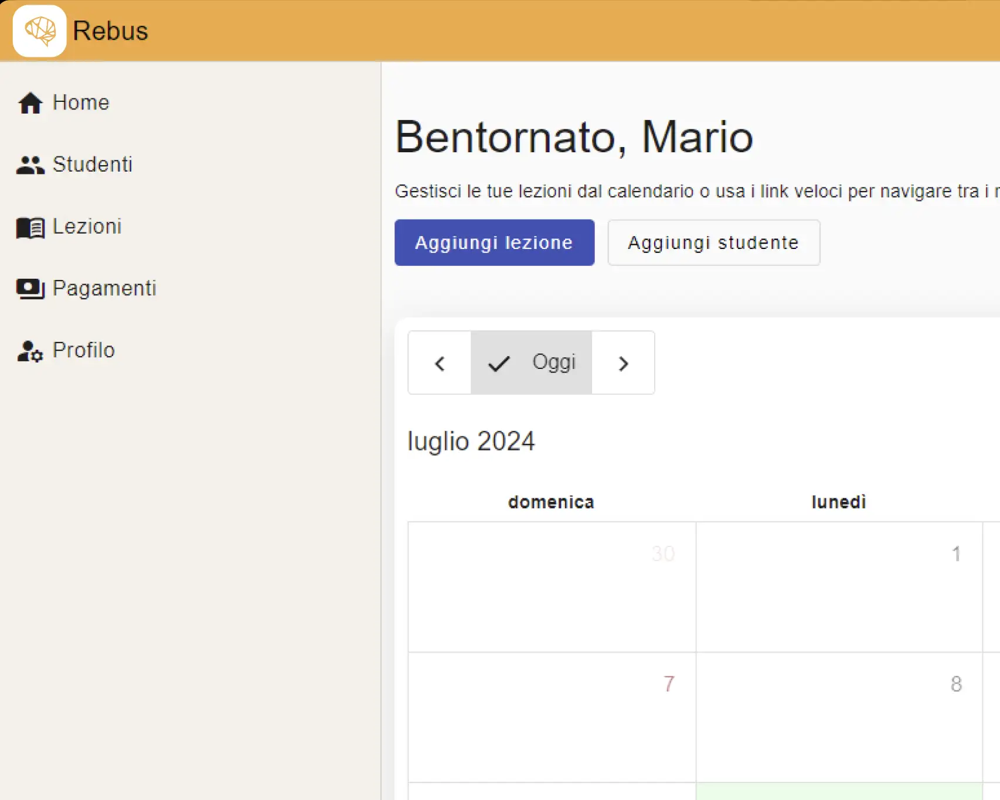
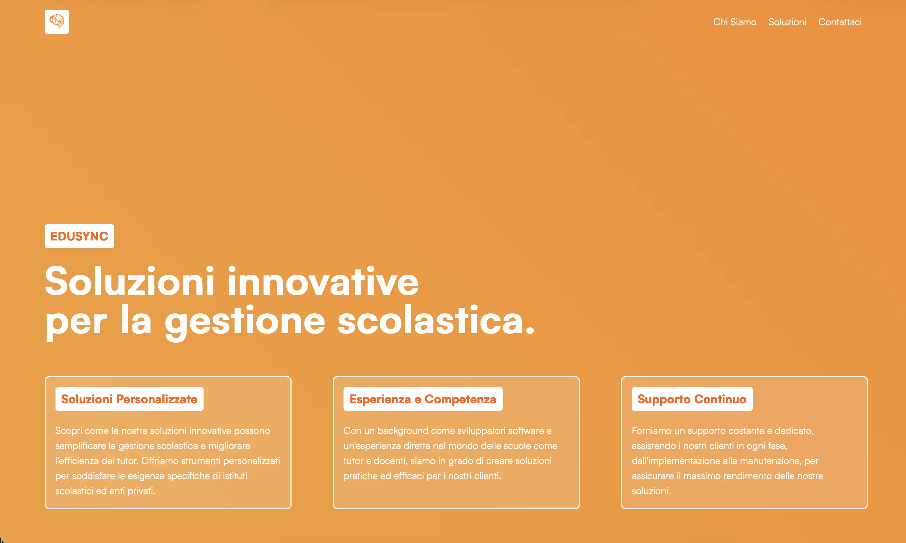
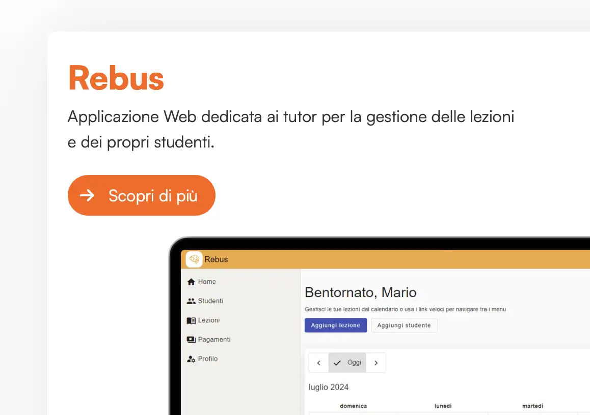

PROJECT
EduSync
EduSync is a web application designed to simplify school management for tutors and institutions. Offering customized tools, practical solutions, and continuous support, it improves efficiency and streamlines daily educational tasks.
Logo design by Ambra Grillini
2024
Segato Niccolò, Tarozzi Ares, Haque Mir Ashiful
Business



EduSync
2024 - Business
2 collaborators

